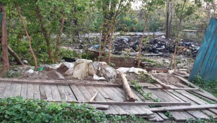
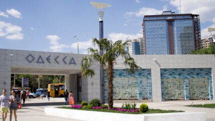
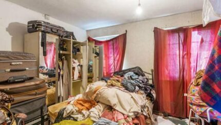
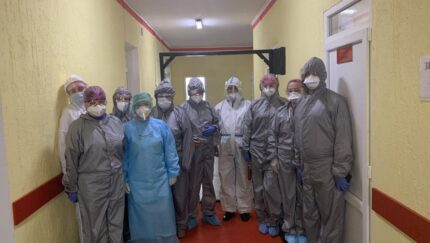

В трех областях Украины и Киеве карантин будет жестче, чем в других Коронавирус в Украине 14:22 - 4 мая 20204 мая, 2020 Саша 0
Послы G7: Украина может потерять поддержку, если примет изменения в закон о НАБУ 13:45 - 4 мая 20204 мая, 2020 Люда 0
Кабмин продлевает карантин до 22 мая, но со смягчениями: все подробности Коронавирус в Украине 13:22 - 4 мая 20204 мая, 2020 Саша 3
Тимошенко получила более 5,5 млн долларов в качестве компенсации за «политические репрессии» 12:48 - 4 мая 20204 мая, 2020 Саша 2
Пандемия коронавируса: Какие страны с 4 мая смягчают карантин и что ждет людей Коронавирус в мире 12:02 - 4 мая 20204 мая, 2020 Люда 0
Полтора месяца назад мэр Черкасс поддерживал введение карантина и призывал полицию действовать жестко Коронавирус в Украине 12:02 - 4 мая 20204 мая, 2020 Саша 1
Ученые выяснили, как ремдесивир влияет на коронавирус Коронавирус в мире 11:01 - 4 мая 20204 мая, 2020 Саша 0
У двух умерших на Бали украинцев не выявили коронавирус, начато расследование 10:21 - 4 мая 20204 мая, 2020 Люда 0
Разведка США: Китай скрывал информацию о коронавирусе, чтобы успеть закупить за рубежом средства защиты Коронавирус в мире 09:45 - 4 мая 20204 мая, 2020 Саша 1
В Украине количество зараженных коронавирусом превысило 12 тысяч: данные по областям Коронавирус в Украине 09:37 - 4 мая 20204 мая, 2020 Люда 0
В США зафиксировали самый смертоносный день за весь период эпидемии коронавируса Коронавирус в мире 22:49 - 3 мая 20204 мая, 2020 Маша 0
Сожгли палатку, били и оскробляли: В Киеве напали на ромскую семью 21:26 - 3 мая 20203 мая, 2020 Маша 0
Госсекретарь США заявил, что коронавирус начал распространяться из лаборатории в Ухане Коронавирус в мире 20:31 - 3 мая 20204 мая, 2020 Маша 2
 В Одессе начали работу кафе и магазины, люди массово ходят без масок Коронавирус в Украине 19:54 - 3 мая 20203 мая, 2020 Маша 1
Тищенко: «Велюр» готов заплатить штраф, если вину докажут. До конца карантина я буду готовить обеды медикам 17:56 - 3 мая 20203 мая, 2020 Роман 3
На Волыни мужчина в балаклаве сжег авто браконьеров с дубом, чтобы уничтожить доказательства 17:37 - 3 мая 20203 мая, 2020 Маша 1
В России на нефтегазовом месторождении коронавирус обнаружили у 3 тысяч человек Коронавирус в мире 16:53 - 3 мая 20203 мая, 2020 Мария 1
#SaveФОП: Предприниматели в центре Киева требовали ослабить карантин Коронавирус в Украине 16:31 - 3 мая 20203 мая, 2020 Мария 0
Facebook снял «галочку» верификации у Поклонской по запросу Украины 16:31 - 3 мая 20203 мая, 2020 Маша 1
Гончарук: Не понимаю, почему «Эпицентр» может работать, а парикмахерская — нет Коронавирус в Украине 15:23 - 3 мая 20203 мая, 2020 Оксана 1
Ошеломительно: Западные спецслужбы подготовили доклад о действиях Китая по уничтожению доказательств COVID-19 Коронавирус в мире 15:20 - 3 мая 20203 мая, 2020 Маша 1
 Магнитофон над унитазом и ванна в кухне: Жуткие квартиры, которые пытались продать риэлторы 14:36 - 3 мая 20203 мая, 2020 Мария 0
Угри в океанариуме Токио начали забывать как выглядят люди: им будут звонить по видеочату Коронавирус в мире 13:48 - 3 мая 20203 мая, 2020 Мария 0
Коронавирусом заболел замглавы Житомирского облсовета Коронавирус в Украине 13:33 - 3 мая 20203 мая, 2020 Мария 1
 Глава Одесчины рассказал, почему в области произошла вспышка коронавируса Коронавирус в Украине 12:44 - 3 мая 20203 мая, 2020 Мария 0
Садовый вступился за мэра Черкасс: Нужно прекратить его преследование. Он выразил мнение громады Коронавирус в Украине 12:13 - 3 мая 20203 мая, 2020 Оксана 3